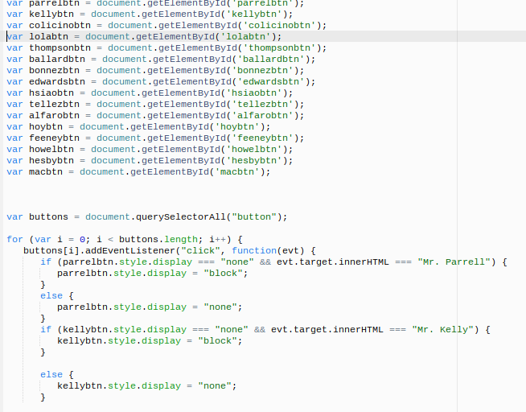
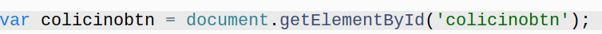
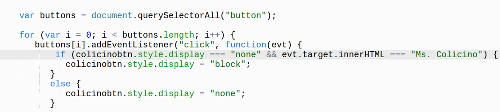

What I madeFor my big Computer Science project, I created a very peculiar webpage. This web page is dedicated to showcasing the memes, and quotes of Teachers at Summit Prep. Why I made itBefore expeditions I had a bad sense of what I wanted to do. But as expeditions began to start, I came to the conclusion that I should do a project that would combine my love for memes, and making other people laugh. So, I created this page because I wanted to showcase to people what teachers say on a regular basis at school, and throughout class, or what quotes are important to them. For many teachers, I created memes with some of the quotes they have said. In the sense of things, I enjoy making funny memes of my teachers in my grade, and many other grades because I really enjoy laughing with people about funny things. I believed that this project would be challenge for me, and I managed to complete it to the best of my abilities. |
Picture
|
How Do I create a working Button that displays, and hides information?Button Variable:The code for the information of each teacher is almost identical in all the parts of this code, except for the id names, and variable names. So I will explain the code on just one teacher, because if I explain on all the teachers I would be repeating myself. What exactly is it?The code displayed, is the beginning stage of creating a button made specially for each teacher, and the memes, and quotes that are associated with them. Without this it is almost impossible to move forward towards displaying, and hiding information. I am explaining the code using the Teacher Ms. Colicino. This code creates a variable that has a specific name, and sets it equal to the id of that exact same name as in the variable. The code makes it so that the computer will be able to correspond information with id/name that it was originally given. This is the basic process for making the button begin to function as it should.What does it do? And How does it do it exactly?The code creates this variable by using the code var. Var creates a variable, which you have to give a specific name to, to whoever or whatever you are trying to display. The code sets the variable (which in this case is colicinobtn) equal to document.getElementById(‘colicinobtn’); The code document.getElementById, creates an id of the specific variable. In the document where the variable is stored, the computer needs to be able to access the certain document when it come to performing certain tasks. The computer get the elements that are in the document by the id of the variable. Without this basic code, the computer would have no way of knowing which document to pull elements from and perform a certain task for each individual variable.Knowledge that you will need for SuccessTo fully understand this code it’s important know that when it comes down to creating a button variable, you have to make a variable that is specific to whatever you are trying to display in the button. If it’s not similar to the specific thing you are to accomplish, the variable will be confusing to remember, and will make it even harder to identify what’s going on. Also you should note that in this specific code you need to put the same id name in the getElementById tag, as the name of the variable you created.How I figured out what to doThe way I figured out how to create this working piece of code, was through my prior knowledge of creating variables, and using ids. I knew that I would need a variable, and an Id to create a working button. The id, and the variable needed to be connected to html, so I created an id for easy access of information for the computer. By naming the variable, and id “colicinobtn”, I could connect it to the html part of the code. It tells me a lot because when I look at it, I know that it’s the button for the information associated with the teacher Ms. Colicino. All the other variables associated with the teacher’s, were made in the same manor, but they just had different Id and variable names.How the code connects to the overall function of the websiteThe code that I explained, connects to the function of the website, by making it possible for a button to be created. Also it allows the computer to perform commands with organization, because the computer is able to identify what goes where, and what is being performed. This leads to the next steps of making a user friendly button, that can be clicked on by the user itself. |

General CodeThis is the general Javascript code that allows my web page to hide, and display information using a clickable button. This shows the code I am going explaining in different parts. Button Variable 
|
|---|---|
For loop And Quarry Selector:-Making the button function
What exactly is it?
What does it do? And How does it do it exactly?This code, takes all the individual variables that were created, and selects them. In addition the page selects all these variables, and makes it so that when the user clicks on the button with the name of a specific teacher on it, it will tell the computer to display only the block of that teacher's information, and not any other teacher. When the user clicks on it again it hides the teachers information. It tells the computer to listen for a click, and reveals the information. But if there is another click it closes. The code does this by creating a variable called buttons and sets it equal to document.querySelectorAll(“button); By creating the variable “button” it makes so that later I can select all the button variables that were created in the code that I explained above. So you may be asking what is a query selector. So here’s the breakdown. The querySelectorAll, collects that data of all the teacher button variables, and compiles them into a list. This makes it easier for the computer to select each button variable in a shorter amount of time. To be more specific, this an array that compiles the variable, or id’s in a compact list. When a specific command is given to computer it finds the specific name, variable, or id that is related to the command. After the query selector you can see in parentheses (“button”); So, this is an id that was set equal to the variable “buttons”. Its needs an id, because the queryselector with pick up the information of the button name, and give it to the computer for any commands that way be stated. Next I created a for loop. The purpose of the for loop is to make so that when there is a lot of the same commands trying to be accomplished, it can do that command over, and over without having to write too much code. This specific for loop in my code starts off by creating the var i, and sets it equal to the 0. Then it identifies if it is less than the array of buttons. In all arrays, it has something called length. When given a command, the computer will look at all the button variables one by one, and when the length (the one that matches the variable that is part of the command) is greater than the variable i, it selects that variable. After identifying that it moves on, and tells to computer that the data is in increments. The same value is there, except for one extra value. When it's done looping through these conditions, it gets the “buttons” variable and combines with [i]. Then the addEventListener listens for the function “click”, which is basically means that it’s listening for the user to click a button. This lets the computer know that the function(evt) is working. Now the for loop has finished looping through the conditions, and the click function. Now I created an if statement. The if statement says that if the style of “colicinobtn” is displaying nothing, and then the user clicks on the name “Ms. Colicino”, the evt will target the inner HTML of the information contained in in the block. Then the computer will display the block of the teachers information to the user. The memes, and quotes will then appear on the screen. This makes the button clickable. Lastly I created an else statement, so that when you want to hide the information, you can do so by clicking on the button again. The else statement tells the computer that if the “colicinbtn” is clicked again it needs to hide the information. To include the same function into the buttons of the other teacher, all you have to do is create the same if, and else statements, and you will be set.Knowledge that you will need for SuccessWhen you approach this task of creating the following code, you needs to remember that in the for loop you always need to have 3 conditions. No less, and no more. This eliminates possible errors. Another really important piece of advice that you’ll need is that you always have to set the variable i to 0, so that the computer can clearly find the right variable in the array. These are some of the things that I did you ensure I didn’t mess up.How I figured out what to doTo figure how to do it, I knew that I needed something to select that right variables that were connected to the buttons, and hide/display information. The for loop basically looks to see if certain tasks are occurring. Then it informs the computer of the loops findings. It repeats the same commands, because the commands are in a loop. Without the loop you would have to write each code over, and over again manually. So the for loops saves you the extra effort the would have inevitably been a waste.How the code connects to the overall function of the websiteThis connects to the overall function of the website by allowing the user hide, and display the information of the teachers by clicking on the button. It makes it so that all the information of each teacher can be displayed correctly to any user, that interacts with my website.
| For loop And Quarry Selector |